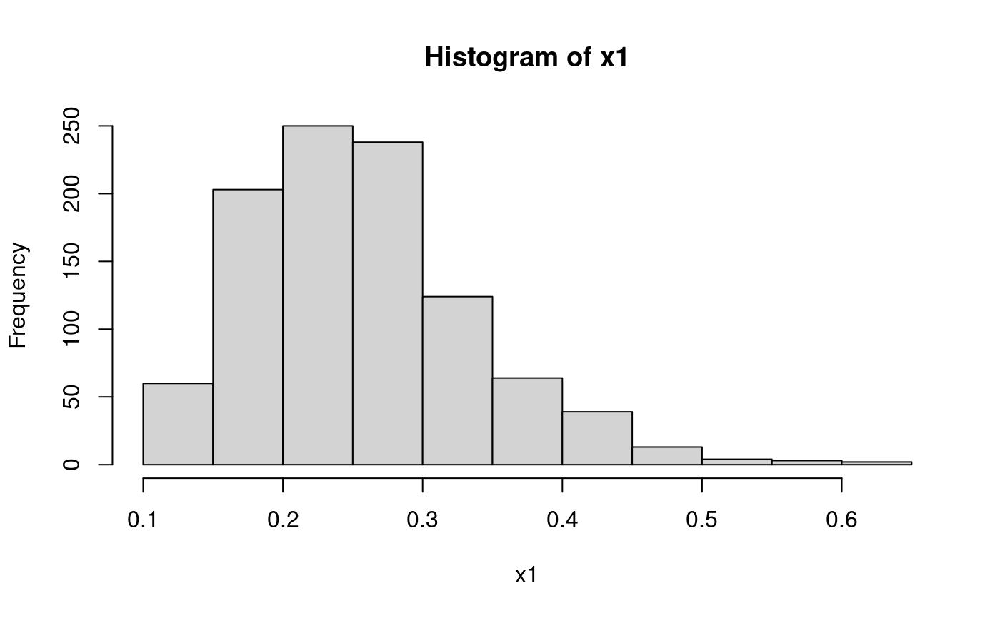
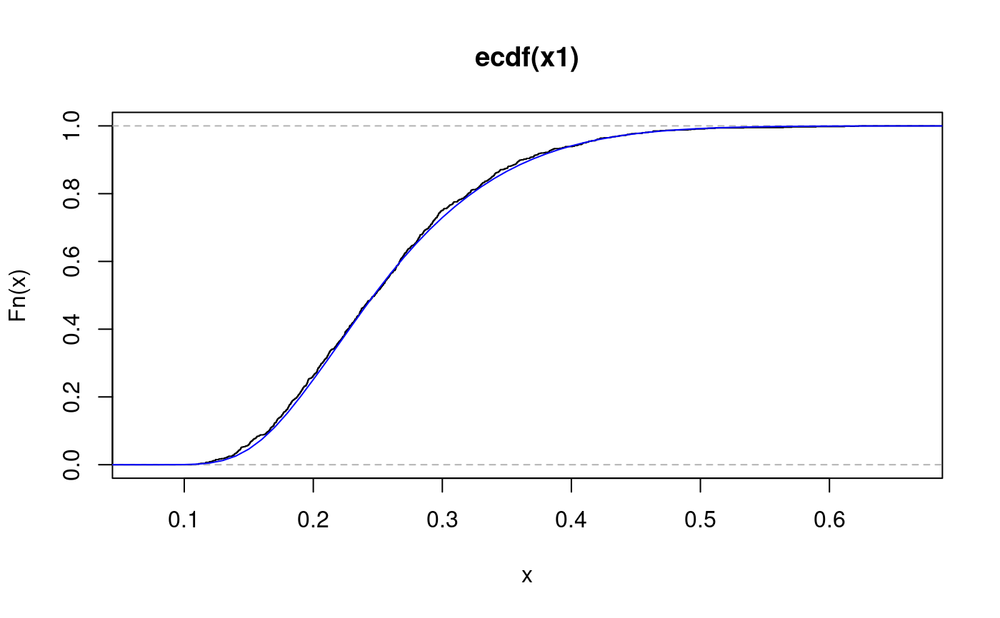

psi.rks.RdGenerate random samples from Kolmogorov distribution.
psi.rks(n, df, randgen = runif, cdf = punif, ...)
| n | number of observations. |
|---|---|
| df | degrees of freedom of the Kolmogorov distribution |
| randgen | a function or a name of one that generates random numbers from the hypothesised distribution. |
| cdf | the cdf of the hypothesised distribution. |
| ... | parameters to be passed down to |
Instances of the \(D_{df}\) statistic are obtained by generating
random samples of length df from the hypothesised distribution
and computing \(D_{df}\) on them.
In the case of a simple null hypothesis from a continuous
distribution the distribution of the statistic does not depend on
the underlying distribution. So, only the arguments n and
df are really necessary for the Kolmogorov-Smirnov test.
Imaginative settings for this argument may be used to generate samples
in the case of composite hypotheses.
a numeric vector representing a sample from the distribution of the Kolmogorov statistic for the specified distribution.
